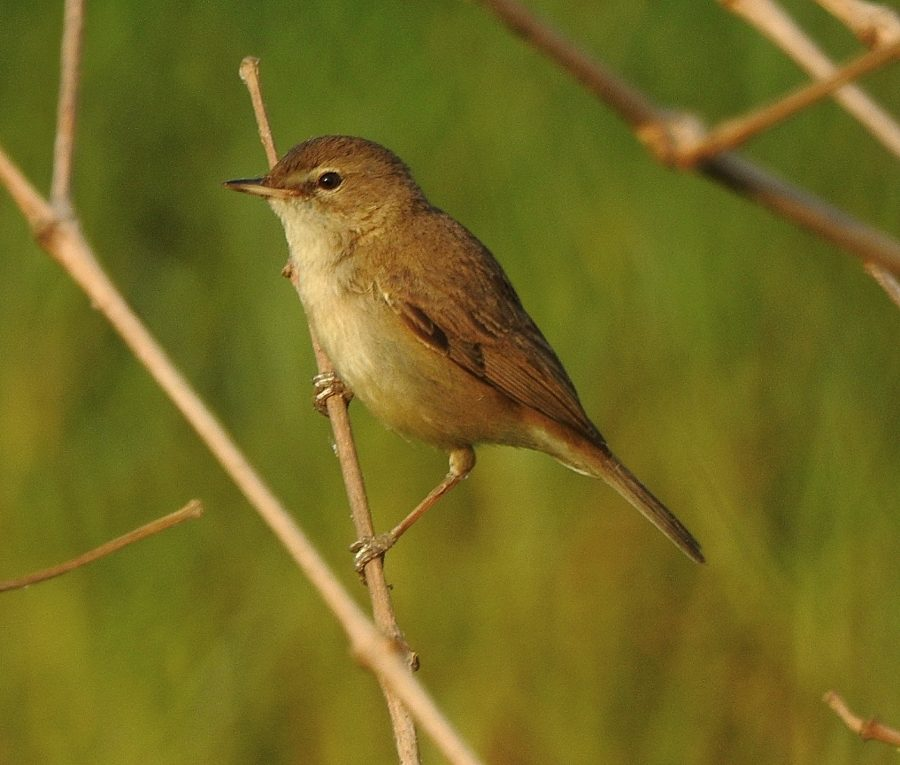

बूटेड वार्बलरBooted Warbler
Iduna caligata · Acrocephalidae · BRD-0232

- Scientific name वैज्ञानिक नाम
- Iduna caligata (Eversmann, 1853)
- Family कुल
- Acrocephalidae
- Hindi हिंदी
- बूटेड वार्बलर
- Local names स्थानीय नाम
- booted warbler, warbler
- Status here यहाँ की स्थिति
- native
- Movement आवागमन
- Winter visitor
- Known from कहाँ दर्ज
- Others have published records from the Basti–Ayodhya districts बस्ती–अयोध्या के ज़िलों से दूसरों के प्रकाशित अभिलेख
- IUCN IUCN
- LC
- Review समीक्षा
- audited and independently read
When to look कब देखें
Winter visitor शीतकालीन प्रवासी. Expected mainly in October, November, December, January, February, March, April. मुख्यतः अक्टूबर, नवंबर, दिसंबर, जनवरी, फ़रवरी, मार्च, अप्रैल में अपेक्षित।
Arrives in October from breeding grounds in central Asia; departs by April. Expected in scrubland and cultivated areas with cover. Handbook of the Birds of India and Pakistan (Ali & Ripley 1968) documents winter distribution across the Gangetic plain. All migrants and visitors →
Uses and possibilities उपयोग और संभावनाएँ
Drawn from the documented uses in the profile below, where each is labelled traditional, current or a research lead. All uses →
Tell it apart from इनसे अलग पहचानें
बूटेड वार्बलर / Booted Warbler
Iduna caligata (Eversmann, 1853) — Acrocephalidae
बूटेड वार्बलर — सर्दियों में मध्य एशिया से आने वाली एक छोटी, भूरी पक्षी जो घनी झाड़ियों और नरकुल में छिपी रहती है। यह बहुत गुप्त रहती है और अक्सर दिखाई नहीं देती, लेकिन अगर सुना जाए तो इसकी सीटी की आवाज़ इसे पहचान देती है।
Quick Identification त्वरित पहचान
| Feature | Description |
|---|---|
| Size | Small; 13–14 cm long |
| Overall colour | Uniform brown or olive-brown |
| Underparts | Pale buff or whitish |
| Supercilium | Pale, faint |
| Tail | Relatively long; brownish |
| Eyes | Dark; pale eye-ring |
| Posture | Upright; skulking in vegetation |
| Behaviour | Cryptic; stays in dense cover |
Field tip: A small, plain warbler of scrubland and reedy areas. Uniform brown plumage with pale underparts. Lacks obvious field marks, making identification challenging. Remarkably cryptic and skulking in behaviour. Often detected by call rather than sight. The "booted" name refers to feathering on the tarsi (legs) that distinguishes it from some related warblers.
हिंदी — कैसे पहचानें:
बहुत छोटी, भूरी पक्षी।
घनी झाड़ियों में छिपी रहती है।
आवाज़ से पहचानी जाती है।
अक्सर दिखाई नहीं देती।
Morphology आकारिकी
Biometrics:
| Measurement | Range |
|---|---|
| Total length | 130–140 mm |
| Wing (flattened chord) | 59–67 mm |
| Tail | 55–65 mm |
| Bill | 9–11 mm |
| Tarsus | 17–19 mm (feathered) |
| Weight | 11–14 g |
Size: 13–14 cm long; wingspan 17–19 cm. One of the smaller warblers.
Plumage: Uniform olive-brown or brown above. Rump slightly more olive. Underparts pale buff or whitish, sometimes with olive-buff tones on flanks. Wings and tail brown, darker than back.
Head: Brown; supercilium pale and faint. Loral area slightly paler. Ear coverts brownish.
Eyes: Dark brown; thin pale eye-ring.
Bill: Short, slender, slightly pointed; dark above, pale below.
Legs: Pale olive or greenish; feathered down to the foot (the "boots"), distinguishing from some similar warblers.
Sexes: Very similar; no obvious dimorphism.
Juveniles: Slightly more olive-toned; otherwise similar to adults.
Vocalisations. Call repertoire:
- Song: A rapid, churring warble, often given from deep within vegetation; only occasionally heard in winter quarters.
- Contact call: A soft tik or tsip.
- Alarm call: A brief, sharp chatter.
हिंदी: नर्म "टिक" की कॉल। डर जाने पर "चटर"। गान सर्दियों में कम सुनाई पड़ता है।
Behaviour & Ecology व्यवहार और पारिस्थितिकता
Foraging: Gleaning insectivore; feeds by picking small insects from foliage and twigs. Prey:
- Small flies and gnats
- Tiny moths and larvae
- Small spiders
- Very occasionally: small seeds
Feeding technique: Actively forages through dense vegetation, moving quickly and keeping low. Rarely ventures into open.
Social behaviour: Solitary or occasionally in pairs. Usually in mixed feeding flocks with other small warblers.
Habitat preference: Dense vegetation: scrubland, reedy areas, thick hedgerows, reed beds. Requires cover and avoids open spaces.
Activity: Primarily diurnal; keeps to undergrowth.
Cryptic behaviour: One of the most skulking and cryptic of warblers; easily overlooked. Often detected by call rather than sight.
Predators: Small snakes, cats.
हिंदी: घनी झाड़ियों में कीड़े खोजता है। बहुत गुप्त रहता है। शायद ही कभी खुले में दिखता है।
Life Cycle / Phenology जीवन चक्र
Winter visitor: Absent during breeding season (May–August); returns to eastern UP from October and remains through March or April.
Arrival and departure: First birds arrive in late September; numbers peak in November–February; departure begins in March.
Breeding grounds: Breeding range in central Asia (Kazakhstan, Uzbekistan, Turkmenistan); does not breed in the region.
Roosts: Nocturnal roosts in dense vegetation, reed beds, or low shrubs.
Moult: Prebasic moult occurs before autumn migration.
हिंदी: सितंबर में आता है, अप्रैल तक रहता है। मध्य एशिया में प्रजनन करता है।
Host Plants or Prey आहार
| Food Type | Examples | Feeding Behaviour |
|---|---|---|
| Small insects | Flies, gnats, small moths | Glean from foliage; active searching |
| Insect larvae | Tiny caterpillars, dipteran larvae | Pick from twigs and vegetation |
| Small spiders | Spider eggs, small spiders | Search among dense vegetation |
| Buds (occasional) | Small leaf buds in spring | Supplementary food |
हिंदी: बहुत छोटे कीड़े खाता है। पत्तियों और तनों से चुन-चुन कर खाता है।
Predators / Natural Enemies शत्रु
- Avian predators: Shrikes, small raptors.
- Reptilian predators: Small snakes.
- Mammalian predators: Cats.
हिंदी: शिकारी पक्षी और बिल्लियाँ खतरा हैं।
Agricultural / Human Relevance कृषि प्रासंगिकता
Protected status: Protected under the Wildlife (Protection) Act 1972.
Pest control: Insectivorous warbler helping to control small insect populations.
हिंदी: यह विधि अधिनियम 1972 के अंतर्गत संरक्षित है।
Expected Locally स्थानीय रूप से अपेक्षित
Not a field record. Written from published accounts for eastern Uttar Pradesh. No confirmed local sighting yet — if you have seen it, that is what the atlas needs.
अभी तक स्थानीय पुष्टि नहीं। यह विवरण प्रकाशित स्रोतों से है, किसी अवलोकन से नहीं।
This species is NOT a field record. The distribution below is based on published sources describing where this warbler should be looked for in eastern UP.
Winter range: Expected in eastern Uttar Pradesh from October to April, particularly in areas with dense scrubland and reedy vegetation.
Habitat preference: Scrubland and reed beds; areas with thick vegetation providing cover.
Peak visibility: Less obviously visible than many warblers due to cryptic nature; best detected by call.
Published records: GBIF holds published records from these districts.
What a first record would be: A dated photograph or detailed observation in a specific location (with GPS coordinates and date) and ideally an audio recording of the call, submitted through the About page.
हिंदी: यह पक्षी स्थानीय रूप से अपेक्षित है। नरकुल और झाड़ियों में ढूंढें।
Distribution वितरण
Global range: Breeds in central Asia and southern Russia; winters across the Indian subcontinent and Middle East.
In India: Occurs as a winter visitor throughout the subcontinent, particularly in areas with reedy vegetation.
In Uttar Pradesh: Occurs as a winter visitor across the state, especially in wetland areas.
In Basti district / eastern UP: Regular winter visitor in reed beds and scrubland areas.
Research Questions शोध प्रश्न
- What is the winter population of Booted Warblers in eastern UP, and how does it vary year to year?
- What is the habitat selection and microhabitat preference within reed beds and scrubland?
- क्या इसकी कॉल का विश्लेषण किया जा सकता है स्वस्थ आबादी की निगरानी के लिए?
- What is the diet composition and does it change seasonally?
- Can acoustic monitoring (recording calls) be used to survey populations more effectively than visual surveys?
- क्या जलाशय में पानी का स्तर और वनस्पति इसकी सर्दियों की उपस्थिति को प्रभावित करता है?
Similar Species मिलती-जुलती प्रजातियाँ
| Species | Key Difference | Hindi | Field Rule | |
|---|---|---|---|---|
| [[paddyfield_warbler\ | Paddyfield Warbler]] (Acrocephalus agricola) | Slightly larger; more olive tone; different habitat preference | पद्य क्षेत्र | Paddyfield prefers reed beds more strictly; Booted is in scrubland. |
| Common Grasshopper Warbler (Locustella naevia) | Slightly larger; heavily streaked back; different song | घास टिड्डी गायक | Grasshopper is more heavily streaked and has different habitat. |
Field rule: Booted Warbler is a cryptic, plain brown warbler of scrubland with feathered tarsi (the "boots"). Best identified by call in many cases. Consult detailed guides for separation from similar cryptic species.
Taxonomy & Classification वर्गीकरण
Original description. Described by Eduard Eversmann in 1853 from Central Asian specimens.
Subspecies. Monotypic.
Family and order placement. Order Passeriformes; family Acrocephalidae (marsh and reed warblers). The genus Iduna contains several Asian warblers previously placed in Hippolais.
IUCN status rationale. Least Concern (LC). Widely distributed; populations stable.
हिंदी: यह गायक विश्व में कई स्थानों पर पाया जाता है। भारत में अभी सुरक्षित है।
Photo Gallery फोटो गैलरी
No photos yet — add field photos to media/species/booted_warbler/ and run node scripts/sync_photos.js.
Wanted photos:
- Adult in non-breeding plumage
- Showing feathered legs (boots) in detail
- In dense vegetation foraging
- Visible in reed bed
- Audio recording of call
References संदर्भ
- Eversmann, E. (1853). Natural history of the region east of the Caspian Sea. Bulletin de la Société Impériale des Naturalistes de Moscou 26: 233–312.
- Ali, S. & Ripley, S. D. (1972). Handbook of the Birds of India and Pakistan. Vol. 7 (Warblers to Redstarts). Oxford University Press, Delhi.
- Cramp, S. (1992). Handbook of the Birds of Europe, the Middle East and North Africa: The Birds of the Western Palearctic. Vol. 6 (Warblers). Oxford University Press.
- Grimmett, R., Inskipp, C. & Inskipp, T. (2011). Birds of the Indian Subcontinent. 2nd edition. Oxford University Press, New Delhi.
- GBIF Occurrence Data — Iduna caligata, India.
- IUCN Red List (2024). Iduna caligata — BirdLife International assessment. Status: Least Concern.
Source file: species/fauna/birds/booted_warbler.md